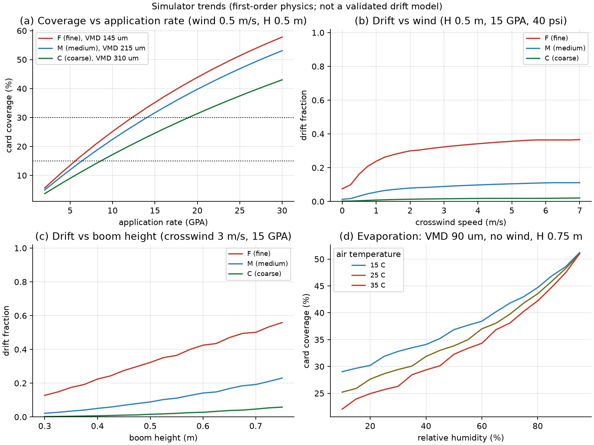
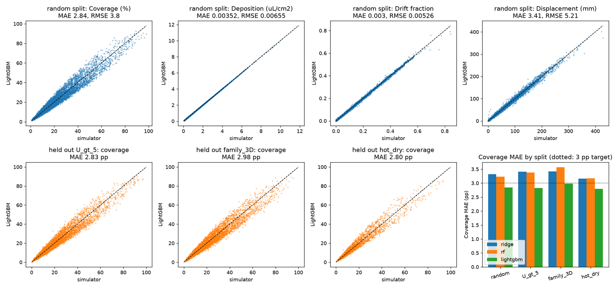
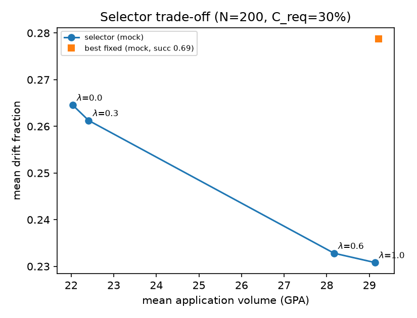
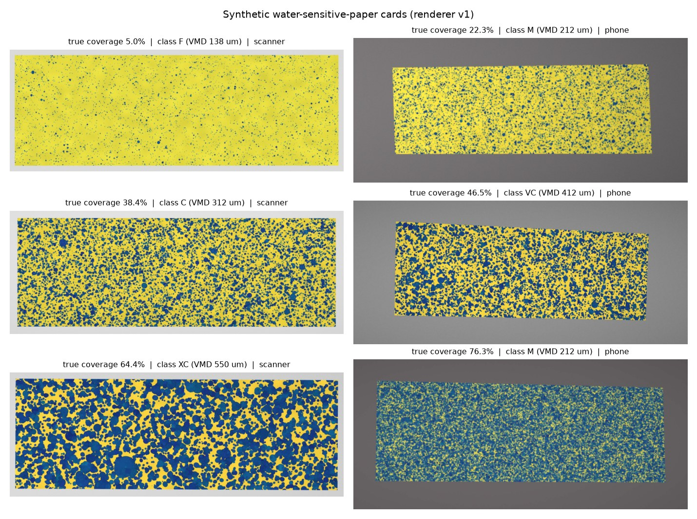
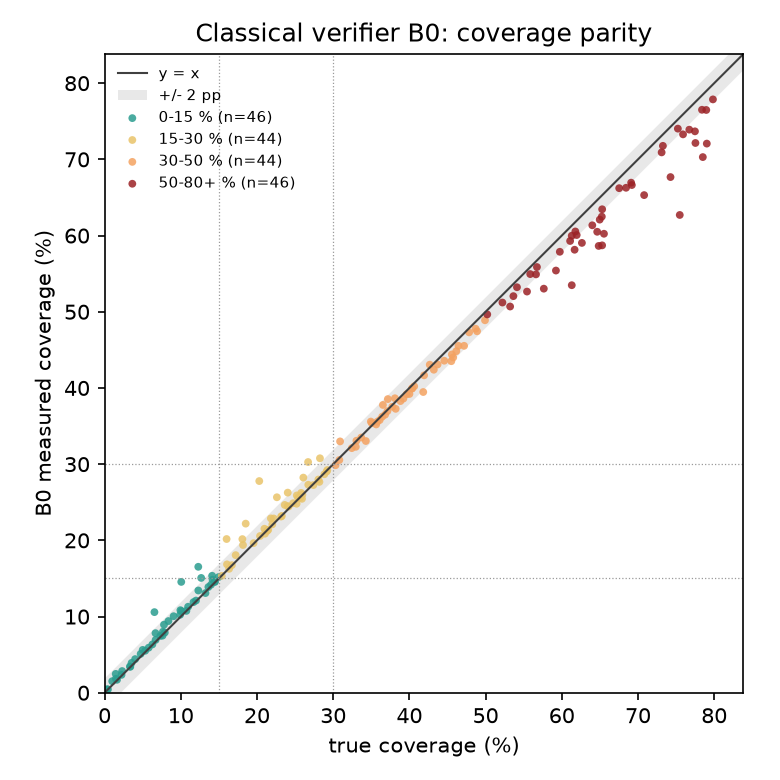

The simulator, nozzle catalog (316 chart rows, 547 candidate settings), predictive model, selector, scenario library, water-sensitive-paper (WSP) renderer, classical verifier, feedback module and loop harness are built, tested and merged. Still pending: the learned verifier B1, the closed-loop experiments, and the selector evaluation with the integrated model. Against the proposal's Table 1, the predictive model meets its target (coverage MAE 2.84 pp on a random hold-out and 2.80 to 2.98 pp on withheld regimes, below the ridge baseline at 3.32 pp), and the classical verifier B0 meets its synthetic-card targets (MAE 1.44 pp, 96.1% three-class agreement, 0.93 s worst case). Two caveats bound every result: they are measured against our own simulator and renderer, and no real annotated WSP card is available yet. Since the proposal, the schedule was compressed after milestones M1 and M2 passed without code (M4 and M5 unchanged), the drift model gained nozzle exit velocity after the first-order relation predicted implausible drift (decision D10), and implementation moved to AI agents under human review, disclosed in Section 7.
The loop follows the proposal (Figure 1). Modules exchange frozen, versioned records defined in contracts.py (schema 1.0), so each was built and tested against mocks first. loop.py runs a 40-segment pass under five policies (open, fast, fast_slow, oracle, best_fixed) and logs one row per segment. The code base is 4,069 lines of Python with 137 test functions.
data/catalog/nozzles.csv holds 316 chart rows for the five families (TP65 50, XR 72, DGX40 24, ULD 80, 3D 90; 43 family-size combinations). catalog.py interpolates flow along Q ∝ √P, recomputes GPA at 20 in spacing, and generates 547 candidate settings on a 5 psi grid within each family's operating range. The validator reports 0 violations on four checks: flow within ±5% of the square-root law between adjacent rows (3 further deviations excused as chart rounding), GPA against 8 sampled chart cells, droplet class monotone in pressure, and ranges against spec.yaml. Compromises: TP65 droplet class uses the 80° column as proxy (D3), DGX40 contributes flow only (D4), ULD and 3D rows come from the manufacturers' sheets [12], and spray angles are nominal (D5).
The simulator composes first-order relationships and is not a validated drift model. Flow follows Q = Qref√(P/Pref) and application rate follows GPA = 5940·GPM/(MPH·W) [4]. The volume spectrum is log-normal with VMD set by the ASABE S572.3 class [3] (centers F 145, M 215, C 310 µm; relative span 1.2). Terminal velocity Vt uses a Schiller–Naumann drag correlation [9]. Evaporation follows the d2 law with λ = 84.76·ΔTwb µm2/s [10] and Stull's wet-bulb approximation [11]; fully evaporated volume is lost. Droplets leave the nozzle at v0 = 0.6√(2P/ρw) (14.1 m/s at 40 psi) and relax toward Vt and the wind under linear drag (τ = Vt/g); size bins displaced over 0.5 m cross-track are drift. Coverage uses a Boolean (Poisson) model [5],
C = 1 − exp(−N·E[πs2/4]/A), s = SF·d, SF ~ U[1.6, 2.2] per segment [6], d ≥ 50 µm.
Hidden mismatch (AR(1) gusts, canopy interception η ∈ [0.6, 1.0], nozzle wear) is set by one level (none, low, med, high) and never seen by the model. Tests cover the anchors in Table 1, monotone trends (Figure 2), the Boolean formula against Monte Carlo placement, and seeded determinism.
| Quantity | Reference or accepted band | Simulator |
|---|---|---|
| Terminal velocity, 20 µm droplet (m/s) | 0.012 ± 25% | 0.012 |
| Terminal velocity, 100 µm droplet (m/s) | 0.265 ± 25% | 0.248 |
| Terminal velocity, 200 µm droplet (m/s) | 0.7 ± 25% | 0.707 |
| Terminal velocity, 400 µm droplet (m/s) | 1.8 ± 25% | 1.610 |
| Drift fraction, fine spray (F), 2 m/s crosswind | 10% to 35% | 30% |
| Drift fraction, medium spray (M), 2 m/s crosswind | 2% to 15% | 8% |
| Drift fraction, coarse spray (C), 2 m/s crosswind | below 5% | 1% |

Dataset v1 has 50,000 simulator rows: Latin-hypercube conditions over the full operating ranges, settings drawn uniformly from the 547 candidates, no hidden mismatch. Coverage has median 17.3% (10th to 90th percentile 5.4% to 46.3%); 43.5% of rows are critical, 30.9% marginal, 25.6% acceptable. Features are raw conditions, wind as cross-track and along-track components, catalog-derived flow, VMD and angle, and physics features (wet-bulb depression, H/Vt, |Ucross|H/Vt, GPA/VMD). We compare ridge, random forest and LightGBM [15]; the interval comes from quantile LightGBM with conformal calibration [16]. Splits are a random 80/20 hold-out and three grouped splits withholding wind above 5 m/s, the whole 3D family, and the hot-dry regime (T > 35 °C, RH < 30%). LightGBM reaches a coverage MAE of 2.84 pp on the random hold-out (target 3 pp) against 3.32 pp for ridge and 3.23 pp for random forest, and is the best model on every split. Its 80% prediction interval covers 80.0% of held-out rows with mean width 9.0 pp. Scoring all 547 candidates takes 9.3 ms (median) and a 50,000-row refit takes 2.3 s, so the selector can run for every segment.
| Split | Ridge | Random forest | LightGBM | LightGBM vs expected | Drift MAE (fraction) | Shift MAE (mm) |
|---|---|---|---|---|---|---|
| Random 80/20 | 3.32 | 3.23 | 2.84 | 0.64 | 0.0030 | 3.4 |
| Wind > 5 m/s withheld | 3.41 | 3.38 | 2.83 | 0.84 | 0.0051 | 8.3 |
| 3D family withheld | 3.42 | 3.57 | 2.98 | 0.90 | 0.0072 | 12.2 |
| Hot-dry withheld | 3.16 | 3.17 | 2.80 | 0.67 | 0.0034 | 3.6 |

The selector implements Eq. (2) of the proposal: it scores every catalog candidate with the model, keeps those with Ĉ + b − m ≥ Creq, and picks the one minimizing λ·driftn + (1 − λ)·volumen (min-max normalized over the feasible set; λ = 0.6). The margin m is the lower half-width of the prediction interval, floored at 1.5 pp. If nothing is feasible it returns the highest-coverage setting and flags the segment. best_fixed is the single setting with the highest success rate over the scenario set, ties broken by lowest drift.
The selector evaluation so far ran on 200 no-mismatch scenarios at Creq = 30% with the mock model and a 60-candidate mock catalog, because the real ones were not merged yet. It checks plumbing only: the selector met the requirement in 70.5% of scenarios, equal to the 70.5% the mock makes achievable, against 69.5% for the best fixed setting, at mean drift 0.233 versus 0.279 (Figure 4; 0.54 ms per call).
experiments/eval_selector.py will be rerun and this section updated.
The scenario library generates 40-segment passes with AR(1) wind and gust bursts, rotating wind direction, diurnal temperature and humidity trends, and back-and-forth headings (the crosswind changes sign every 10 segments). Six presets each have an agronomic rationale: calm_morning (1.2 m/s base wind, benign reference), gusty_afternoon (4.0 m/s, gust probability 0.12), hot_dry (33 to 38 °C, RH 28% to 16%; hot, dry air speeds evaporation and raises drift potential [13]), crosswind_shift (wind direction rotates 140°), marginal_limits (6.0 m/s mean, near the label limit [14], exercises the infeasible path) and inversion_evening (0.6 m/s, cooling; a limitation test, since inversions are not modeled). The parameters are plausible regime choices, not measured weather statistics. The rationale text was drafted from Emery's specification and awaits his review TEAM TO CONFIRM.
The renderer turns the droplets on a card into an RGB image and an exact mask (76 × 26 mm, 600 dpi). Each detectable droplet leaves an area-preserving elliptical stain of diameter SF·d; a vectorized rasterizer replaces cv2.ellipse, which misses 10 to 15% of small stains' area. Degradations (warp applied to the mask too, illumination, blur, noise, JPEG) come in scanner and phone profiles (Figure 5). Over 100 undegraded cards at 1% to 80% coverage, mask coverage matches the analytic Boolean value to a mean absolute 0.14 pp (maximum 0.70 pp; test limit 2 pp), and worst-case render time is under 1 s per card.
The Simões et al. record 10.5281/zenodo.13995950 [7] provides 300 synthetic cards with polygon labels (CC BY 4.0; 635,839 droplets; coverage 1.5% to 41.0%, mean 13.0%). vision/real_data.py rasterizes the polygons and tiles cards; pixel size is inferred from card width because no dpi is published. The two annotated real cards (2,754 droplets) are in a later version whose files are restricted (D9). Zenodo access has been requested and an email to the authors is drafted but not sent TEAM TO CONFIRM request status; until access is granted the real-card criterion is untested.


Baseline B0 is a classical pipeline: card detection with perspective correction, illumination flattening, an (R−B) stain channel thresholded with Otsu's method [2,17], 3×3 opening, and a distance-transform watershed for stain counts and Dv0.1/0.5/0.9. A card is flagged saturated above 60% coverage, or above 30% when one connected component holds over 70% of the stained area.
On the 180 held-out synthetic test cards from the team's renderer (Table 3), B0 reaches a coverage MAE of 1.44 pp (target ≤ 2 pp), three-class agreement of 96.1% (target ≥ 90%) and a runtime of 0.29 s mean and 0.93 s maximum per card on a laptop CPU (target ≤ 2 s). Error is not uniform: in the 50-80+% band the MAE is 3.28 pp with a bias of -3.28 pp (67% of those cards are flagged saturated) and the worst single card is off by 12.8 pp. B0 underestimates coverage above 50% because stains merge. Stain counts and Dv values are unreliable (median relative count error 0.64 overall, 0.25 in the lowest band), which is why coverage, not counts, is the quantity the loop uses.
| Verifier | True coverage | n | MAE (pp) | Bias (pp) | Class agreement (%) | Saturated (%) | IoU | Count error |
|---|---|---|---|---|---|---|---|---|
| B0 | 0-15% | 46 | 0.70 | 0.69 | 91.3 | 0 | 0.80 | 0.25 |
| B0 | 15-30% | 44 | 0.97 | 0.86 | 95.5 | 0 | 0.82 | 0.50 |
| B0 | 30-50% | 44 | 0.77 | -0.47 | 97.7 | 0 | 0.83 | 0.71 |
| B0 | 50-80+% | 46 | 3.28 | -3.28 | 100.0 | 67 | 0.86 | 0.92 |
| B0 | all | 180 | 1.44 | -0.57 | 96.1 | 17 | 0.83 | 0.64 |
results/b1_synthetic.json.The grid is five policies × four mismatch levels × the scenario presets × 20 seeds, reported as mean ± 95% CI. Gap recovery is (closed − open)/(oracle − open) in requirement-met segments; volume overhead is against the oracle. Ablations vary α, warm-up, per-regime versus global bias and the verifier (B0, B1, perfect measurement). The runs test whether the control logic corrects a known mismatch inside our simulator, not field efficacy.
Table 4 mirrors Table 1 of the proposal. met: target satisfied on the evaluation available now (inside our simulator only); on track: partial evidence; at risk: blocked by an outside dependency; pending: no result yet.
| Criterion | Target | Current measured | Status |
|---|---|---|---|
| End-to-end | A simulated pass runs from prediction to correction with no manual steps; every decision is logged and visualized. | Loop harness runs all five policies and writes one log row per segment (verified on mocks by the smoke test). Integration with the real modules and the demo app is in progress. | on track |
| Simulator | Coverage rises with volume; drift rises with wind, release height and fine fraction. | 36 simulator tests pass, including monotone sweeps for each trend and the D10 anchors (Table 1). | met |
| Predictive model | Coverage MAE ≤ 3 pp on held-out conditions and below the linear baseline; grouped-regime error reported; sensitivity checks pass. | 2.84 pp random; 2.83, 2.98, 2.80 pp on three withheld regimes; ridge 3.32 pp; 5 of 5 sensitivity checks pass. Noise floor 2.76 pp. | met |
| Selector | No mismatch: ≥ 90% of scenarios meet Creq at lower drift than the best fixed setting with the same success. | Not yet measured with the integrated model; the mock-only run checks plumbing. | pending |
| Verification, synthetic cards | MAE ≤ 2 pp; three-class agreement ≥ 90%; ≤ 2 s per card on a laptop CPU. | B0: MAE 1.44 pp, agreement 96.1%, 0.93 s worst case (180 cards). B1 pending. | met |
| Verification, real cards | MAE ≤ 5 pp on real cards. | Untested. The two annotated real cards are in a restricted Zenodo version (D9); access requested. | at risk |
| Closed loop | Under mismatch, recovers ≥ 50% of the open-loop-to-oracle gap in requirement-met segments with ≤ 10% more volume than the oracle (20 seeds, 95% CI). | Experiments running; no measured value yet. | pending |
The decision log (Docs/decisions.md) holds ten entries, each resolving an ambiguity that would have split the modules. D1 and D2 fix conventions (wind direction is where the air moves toward; four distinctly named outputs, because "D" meant drift in the proposal and deposition in the specification). D3 to D5 record catalog gaps. D6 limits the selector to nozzle, size and pressure, deferring speed as a control variable. D7 and D8 record the compressed schedule and the use of system Python 3.14, since the machine's application-control policy blocks uv-managed interpreters. D9 reports the real-card criterion as untested because the annotated cards are restricted, rather than estimating it.
D10, exit velocity. With the first-order displacement x = U·H/Vt and a 0.5 m threshold, a medium droplet (215 µm, Vt = 0.78 m/s) needs 0.64 s to fall 0.5 m and moves 1.3 m in a 2 m/s crosswind, so the model predicted 87% drift of medium-droplet volume, which is implausible at this height. Real droplets leave the nozzle at about 14 m/s and cross most of the height in tens of milliseconds before settling. Adding exit velocity with linear-drag relaxation gives 30% drift for fine, 8% for medium and 1% for coarse sprays at the same conditions. We kept the 0.5 m threshold instead of retuning it, so the fix changes the physics, not a free parameter.
inversion_evening tests a limitation, and the drift constants are fitted to published trends, not measured.M1 and M2 passed without committed code, so the freeze, baselines and first integration were compressed into three gates before the midterm; M4 and M5 are unchanged. Tools follow the proposal: a private GitHub repository with review before every merge, a Microsoft Teams channel, a decision log (10 entries) and an AI-use log (12 entries); tests and the end-to-end smoke test must pass before a merge.
AI-assisted workflow. One orchestrator session (Claude Opus 5.5) wrote the execution plan, froze the contracts and spec.yaml, and reviewed each work package. Implementation agents (Claude Sonnet models) each took one package in a separate git worktree against the frozen contracts, added tests and logged the session; packages ran in parallel and merged in dependency order. The accountable member reviews each module; contracts change only through the orchestrator; Kinjalk runs the orchestration and merges (Table 5).
Schedule. M1 (specification freeze, Oct 2) was met on Oct 18 at gate R0, 16 days late: contracts, spec.yaml, mocks and smoke test frozen. M2 (baselines, Oct 16) was met at gates R1 and R2 on Oct 19 to 20, 3 to 4 days late: simulator, dataset, model, scenarios, renderer and B0, with results in this report. M3 (Oct 30: B1 on GPU, selector re-evaluation with the integrated model), M4 (Nov 20: closed-loop experiments, real-card evaluation if access is granted) and M5 (Dec 9: final report, demonstration, presentation) are unchanged.
"Work completed" means built, tested and merged unless stated. Modules implemented by AI agents are owned and reviewed by the named member; each member's own authoring and review is stated only where project documents show it.
| Member | Responsibilities | Work completed | Next milestone |
|---|---|---|---|
| Emery Brewer (remote) | System specification (parameter definitions, physics relationships, assumptions); scenario rationale review; selector ownership; domain validation. | Authored CoverageAIDraftParameters.pdf (variables, units, ranges, physics relationships, validation approach) and the earlier simulations in ProjectDeliveryProposal.pdf; these define spec.yaml and the physics the simulator encodes. The catalog, scenario library with rationale text, and selector were implemented by AI agents for his ownership and are merged. TEAM TO CONFIRM his review of catalog values, preset rationale and selector, and any further contributions. |
Review selector results with the integrated model (M3, Oct 30); pattern-overlap, spray-angle and speed-control relationships (M4, Nov 20); domain-validation section (M5, Dec 9). |
| Junjie Ao | Simulator and dataset pipeline; predictive model ownership. | The simulator (physics/, simulator.py, with the D10 fix), dataset v1 (50,000 rows) and predictive model (LightGBM with interval, ridge and forest baselines, grouped-split evaluation) are built, tested and merged; AI agents implemented them for his ownership. TEAM TO CONFIRM his own authoring, review and decisions on these modules. |
Model v2 with error analysis and refit on loop records (M3, Oct 30); model in the full loop (M4, Nov 20); evaluation of the spray-angle extension (M5). |
| Kinjalk Parth | WSP renderer; verification (B0, B1); feedback and loop harness; integration and experiments; orchestration of AI-assisted implementation. | Execution plan, contracts, spec.yaml, decision log, mocks and smoke test; renderer (0.14 pp mean agreement with the analytic model); B0 (1.44 pp MAE on 180 synthetic test cards); Simões data loader; feedback module and loop harness with five policies; review and merge of all work packages; this report's draft. B1 and the closed-loop experiments are in progress. |
B1 trained on GPU and evaluated (M3, Oct 30); integration, closed-loop experiments and demo app (M4, Nov 20); real-card evaluation if granted; final presentation (M5). |
Risks update. The proposal's risks stand: sim-to-real transfer (unmeasured until real cards arrive), circular evaluation (hidden mismatch, oracle, perfect-measurement ablation) and integration slip (realized once, as the M1 and M2 slip). New: AI-written code that teammates must understand (owner review; each member presents their own module) and a 3 pp model target near the noise floor.
The course permits AI use, and this project uses it heavily. The execution plan, contracts, simulator, catalog transcription, model, selector, scenario library, renderer, classical verifier, feedback module, loop harness, tests and the draft of this report were produced by Claude models (Claude Opus 5.5 as orchestrator and reviewer, Claude Sonnet models as implementation agents) under the team's direction; 12 sessions are recorded in Docs/ai_usage_log.md. Team members set the scope, resolve ambiguities in the decision log, review the modules they own, and are responsible for every claim here. Numbers are read from results files at build time; where a result does not exist the report says so. Each member must verify the statements marked TEAM TO CONFIRM before submission.
References [1]–[8] reuse the proposal's [1], [2], [8], [10], [11], [14], [9], [12]; the rest are sources used in the code or project documents.